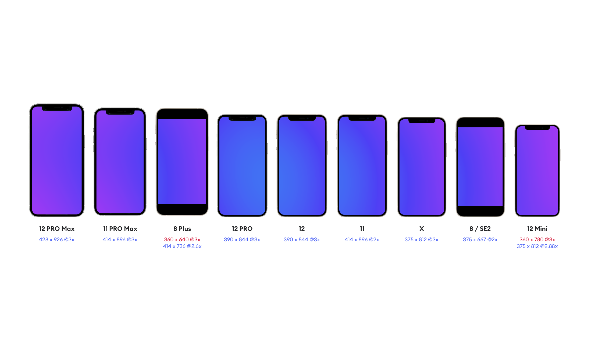
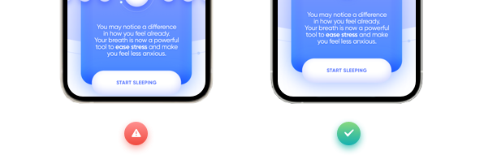
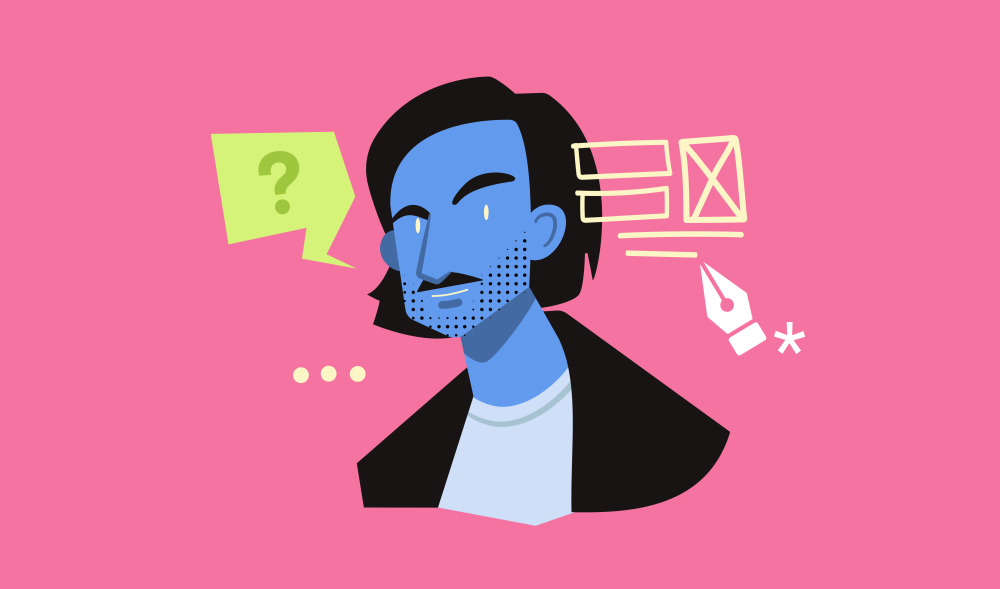
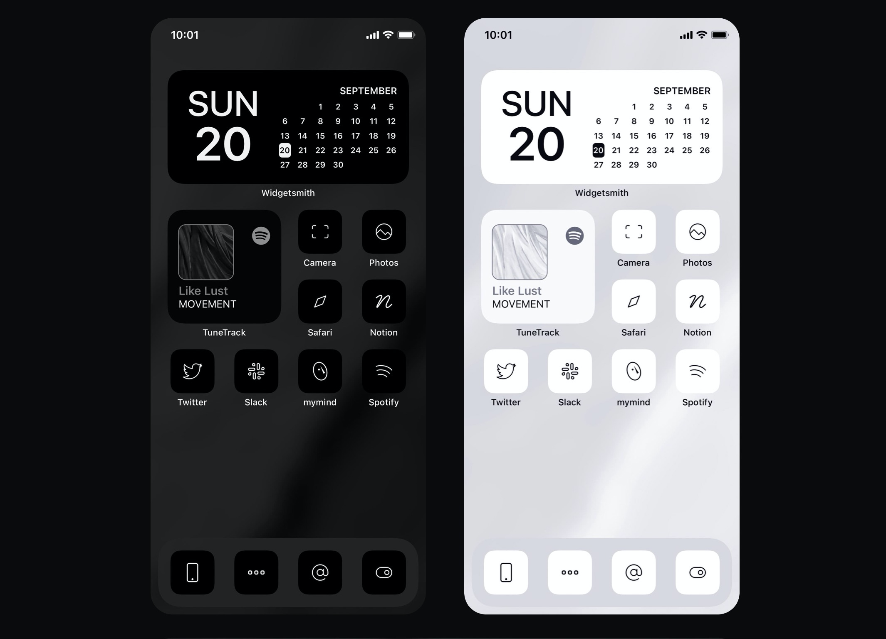
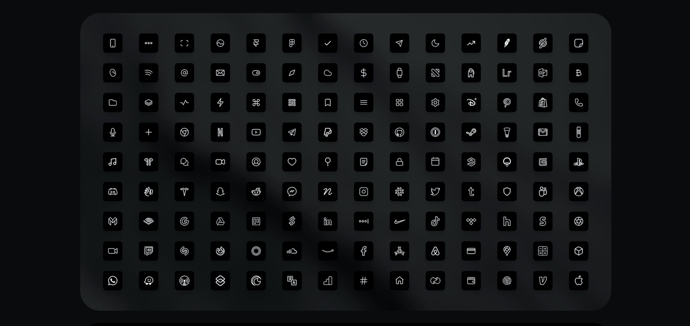
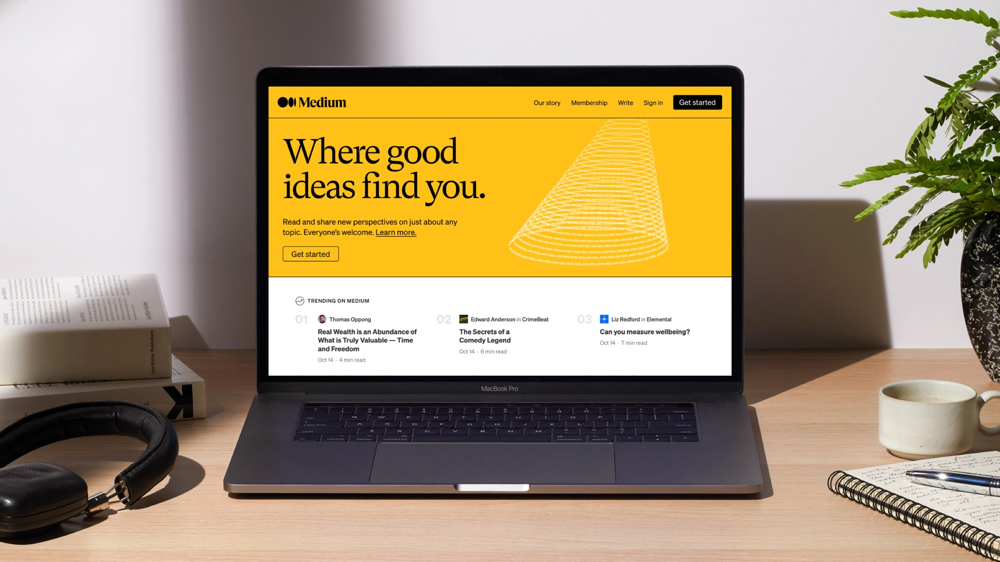
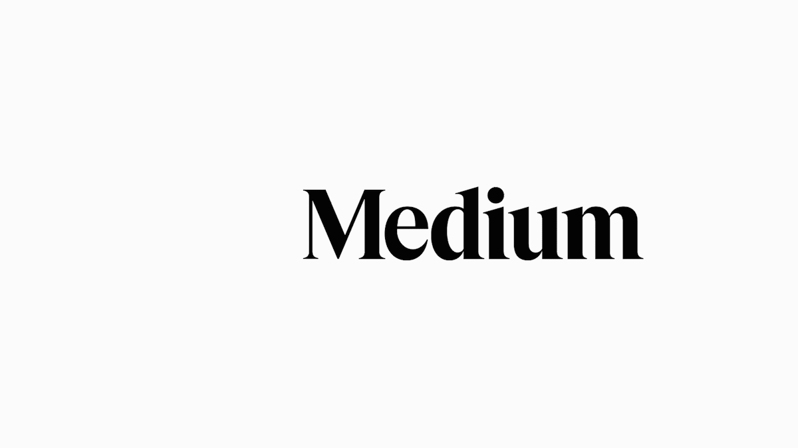
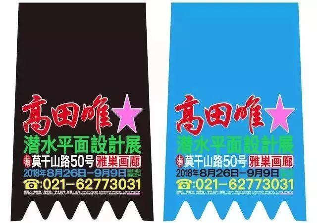
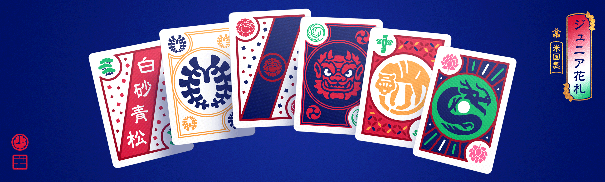

设计周刊 Design Weekly #30
🏷 设计文章
iPhone 12 vs Designers
https://uxdesign.cc/iphone-12-vs-designers-ca8bac776dad
10 月 13 日，一年一度的iPhone发布会上推出了四款新iPhone，大部分人都在讨论新设计和新功能。但对于设计师来说，新款 iPhone 的尺寸又复杂起来了，320 x480设计一切的时代已经过去了。文中举了一些应对新尺寸的设计方法，大家可以爬梯子学习一下。


🏷 设计问答
Spotify设计团队的你问我答第一弹
https://spotify.design/article/ask-spotify-design-01
Spotify设计团队最新的你问我答系列，第一弹就以下 4 个问题给出了简短精炼的回答，如果你也有相同的译文，可以去学习了解一下~
- 如何开始记录项目过程？
- 设计过程中如何跳出细节关注整体？
- 如何组织团队成员（包括产品、开发和领导层）参与到项目中的？
- 着陆页文案多久能写好？

🏷 设计文章
设计师的致富路-6 天 6 位数
产品设计师 Traf 在 iOS 14 发布后制作了一套付费极简图标 ，6 天赚了 10 万美元，这篇文章总结了他的增长经历以及经验如何让他获得额外收入的。80 枚图标，售价 28 刀，国外的付费习惯和国内大相径庭呀~


🏷 品牌设计
Medium 又双叕品牌升级了
https://blog.medium.com/a-more-expressive-medium-starting-with-medium-63b562206d8f
Medium 与 COLLINS 携手合作的品牌升级，Logo 和设计语言都进行了很大的升级。



🏷 设计观点
关于“新丑”，我在担心什么
https://mp.weixin.qq.com/s/J2ES8Alu-mGkc8-RZKMPfA
发现最近新丑风刮得很猛，而我关注到新丑（New Ugly）这个词是从五条人开始的，深入了解了一下，“新丑风”代表-高天唯用离经叛道的设计打破对传统设计的认知。这篇文章表达了这种设计风格对主流视觉及设计新人可能带来的影响。大家对这种风格有什么看法吗？可以留言讨论一下~

🏷 随便看看
设计师Louie Mantia对传统日本扑克牌的看法
https://www.arun.is/blog/junior-hanafuda/
Louie Mantia是一位多产的设计师。他的作品集 涵盖范围很广，包括iPhone上第一个爆款手机游戏Tap Tap Revenge、苹果公司的应用图标。然而，他最出名的是他为Instagram、耐克、Facebook、Target等客户制作的图标。
